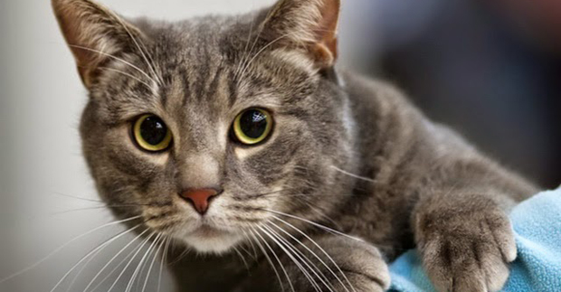
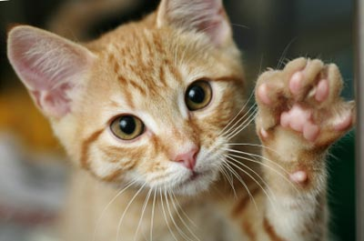
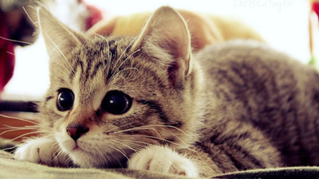
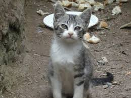
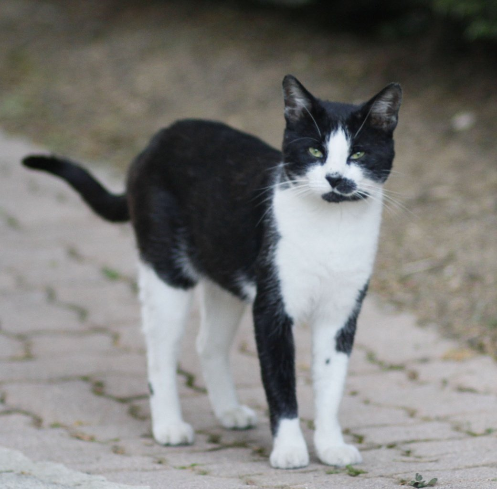

 Pastorcita, una gatita de 1 año. Quiero adoptarla  Luna, una gatita de 7 meses. Quiero adoptarla  Manuela, una gatita de 5 meses. Quiero adoptarla  Marcos, un gatito de 6 meses. Quiero adoptarlo  Pacho, un gatito de 1 año. Quiero adoptarlo